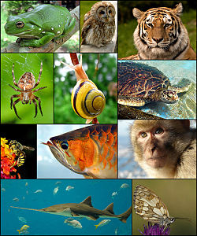

动物
| 动物 化石时期 : 850–0 Ma 成冰纪 - 现今 |
|
|---|---|
|  | |
| 由左至右，由上至下开始：白氏树蛙、灰林鸮、东北虎、花园十字蛛、花园葱蜗牛、绿蠵龟、独居蜂、亚洲龙鱼、巴巴利猕猴、锯鳐和加勒白眼蝶 | |
| 科学分类 | |
| 域： | 真核域 Eukaryota |
| （未分类）： | 单鞭毛生物 Unikonta |
| （未分类）： | 后鞭毛生物 Opisthokonta |
| （未分类）： | 完全动物 Holozoa |
| （未分类）： | 蜷丝生物 Filozoa |
| 界： | 动物界 Animalia Linnaeus, 1758 |
| 门 | |
|
侧生动物亚界 Parazoa 中生动物亚界 Mesozoa（多系群） 真后生动物亚界 Eumetazoa |
|
{kind=link}
动物是多细胞真核生命体中的一大类群，统称为动物界。动物身体的基本形态会随着其发育而变得固定，通常是在其胚胎发育时，但也有些动物会在其生命中有变态的过程。
大多数动物能自发且独立地移动探索，只有极少数的动物（如珊瑚）是固定在一点无法移动。动物行为学是研究动物行为的科学，较著名的行为理论为康纳德·洛伦茨提出的本能理论。
大多数动物是依赖其他生命体作为其营养来源的消费者(生物)，只有极少数是以死亡的生命体（有机体）作为营养来源（例如蚯蚓）的清除者。
已发现的动物化石，多是在五亿四千万年前的寒武纪大爆发时的海洋物种。
目录
[隐藏]特征
动物有几种将其与其他生物相區分的特征。动物是真核生物，且通常是多细胞的[1] （例外请见黏体动物），这将其与细菌和大多数的原生生物相區分。动物是消费者[2]，通常在一个内腔中消化食物，这将其与植物和藻类相區分。动物也因缺乏细胞壁而和植物、藻类和真菌不同。[3]所有的动物都是能动的[4]，若只算一部分的生长期间。胚胎会有形成囊胚的时期，这是只有动物才有的特征。
结构
除了少部分（如海绵）的例外，动物都有一个分化出分别组织的身体。这些组织包含肌肉（能收缩并控制身体的移动）和神经组织（传递与接收讯号）。一般也会有个内部的消化腔，和表皮连有一或两个开口。有这些组织的动物被称之为真后生动物。 所有的动物都有真核细胞，且被包在由胶原蛋白和具弹性的糖蛋白所组成的独特细胞外网络之中。这些网络或许会钙化以形成甲壳、骨头和针骨等结构。在发育时会形成一个较可变动的架构，好让细胞能移动且被重新组织，好使得复杂的结构变得可能。相对地，其他如植物和真菌等多细胞生物有被细胞壁固定住位置的细胞，所以以渐进的生长方式来发育。另外，动物细胞特有的还有如下几种细胞间的结合：紧密接合、间隙接合和桥粒。
繁殖与发育
几乎所有的动物都会进行某种类型的有性生殖。成熟的个体是双倍体或多倍体的。它们有一些特化的生殖细胞，行减数分裂以产生较小可游动的精子或较大不可动的卵子。精子和卵子会结合成为受精卵，且发育成新的个体。
许多动物也能够行无性生殖。这可能发生在孤雌生殖（成熟卵没有经过交配而产生），或一些经由断裂生殖。
受精卵一开始会发育成一个小球，称之为囊胚，在此进行重整和分化。在海绵里，囊胚幼体会游到一个新的位置上并发育成一个新的海绵。而在其他大多数的类群中，囊胚则会进行更为复杂的重整。囊胚一开始会内套以形成具有消化腔的原肠胚和两个各别的胚层－外胚层和内胚层。在大多数的情况下，还会有个中胚层在两者之间。这些胚层接着分化成各式组织和器官。
大多数动物间接利用太阳光的能源来生长。植物利用太阳光来转化出简单的糖类，以一种称之为光合作用的过程。一开始是二氧化碳和水，经由光合作用后，太阳光的能源被转化成葡萄糖中键结的化学能，并释放出氧来。这些糖类接着被用来当做供植物生长的建材。当动物吃下这些植物（或吃下其他吃了植物的动物），由植物产生出来的糖便会被动物利用。这些糖或者直接利用来帮助动物生长，或者被分解掉，释放出储存的太阳能，以供动物活动的能量。此一过程称之为糖酵解。
生活在靠近海床上的深海热泉和海底冷泉等地的动物不依靠太阳能。而是由化能合成的古菌和细菌形成其食物链的基部。
起源和化石记录
动物普遍地被认为是演化自一个鞭毛真核生物。它们最亲近的已知现存生物为领鞭毛虫，其在形态上和某些海绵的领细胞相似。分子研究将动物放在一个称之为后鞭毛生物的超类群中，此一类群亦包括领鞭毛虫，真菌和少数小型寄生原生生物。此一名称的由来是因为可游动细胞的鞭毛是在后面的缘故，如大多数动物的精子，而其他的真核生物则遍向于有前端的鞭毛。
第一个可能表示动物的化石出现于前寒武纪结束时，约在6亿1千万年前，在埃迪卡拉动物群之中。但是，它和之后化石之间的关系则很难认定。一些可能是现在部分动物门的祖先，但也可能是独立的类群，亦可能根本就不是动物。另外Roger Summons和Gordon Love在距今六亿三千五百万年前至七亿一万三千万年前的岩石层中，发现了只在海绵动物的细胞膜中出现的的固态胆固醇[5]。
动物可能在5.65亿年之前即已具有运动能力[6]。除此之外，大多数已知的动物门多少都在寒武纪间同时地出现。至今，寒武纪大爆发这个事件到底是代表着不同类群的快速分化，或者是环境的改变而使得化石形成变得可能，都还留有许多的争议。不过，有一些古生物学家和地质学家推测动物出现的时间要比之前所想的要早上许多，甚至可能早上十亿年之久。在印度的拉伸纪地层中发现的生痕化石如足迹和洞穴等指出存在着像是动物的三胚层虫，且大约和蚯蚓一样大（约5毫米宽）且复杂。[7]
动物类群
海绵（多孔动物门）很早便和其他动物分歧。如上所述，它们缺乏可以在其他大多数门中找到的复杂组织。它们的细胞会分化，但在大多数的情况下不会构成个别的组织。海绵是不会移动的，且一般是经由将水穿透细孔来进食的。有聚合骨骼的古杯动物门可能是海绵的一种或者是单独的一个门。
在真后生动物中，有两个类群是辐射对称的，且拥有单一个开口（同时用做嘴巴及肛门）的消化腔。这两个类群是包含着海葵、珊瑚、水母的刺胞动物和栉水母。两者都有分别的组织，但并没有构成器官。此类动物只有外胚层和内胚层两个胚层，之间只有些零散的细胞。因此，这些动物有时被称之为是二胚层的。细小的扁盘动物门也很类似，但它们没有固定的消化腔。
根据最近几年的研究发现栉水母动物门有其独特的结构特征和化石证据，比如独特的神经系统，或许栉水母是最早从多细胞动物的主干上分离出来。这一假说被称为“栉水母优先”假说（‘Ctenophora-first’ hypothesis）。
剩下的动物可能形成一个称之为两侧对称动物的单系群。大部分而言，它们是两侧对称的，且通常有一个特化的头部作为进食和感觉的器官。其身体是三胚层的，即有三个发育良好的胚层，且组织会形成分别的器官。其消化腔有两个开口（嘴巴和肛门），也有一个称之为体腔或假体腔的身体内腔。不过，每个特征都存在着一些例外，如棘皮动物的成体是辐射对称的，而某些寄生虫有着极简化的身体结构。
基因研究大大地改变了人们对两侧对称动物间关系的了解。大多数的两侧对称动物可以被归在四个主要分支内：后口动物、蜕皮动物、扁虫动物和冠轮动物。除此之外，还有一些小类群，拥有相对简单的结构，且似乎是在主要类群之前便分歧了出来。这些类群包括直泳动物门、菱形动物门和内肛动物门。黏体动物此一单细胞的寄生生物原先被认为是属于原生生物界的，而现在也确认是属于刺胞动物门。
后口动物
{kind=link}
后口动物和其他的两侧对称动物（合称为原口动物）有一些部分不同。两者都有完全的消化道，但原口动物原本的开口（原肠）发展成了嘴部，肛门则个别地形成；而在后口动物中则是刚好相反。大多数原口动物的细胞都只是填满原肠胚(archenteron)的内部来形成中胚层(mesoderm)，称之为裂体腔发展；而在后口动物中，则是经由内胚层的内套形成，称之为肠体腔囊。后口动物亦有个背侧，而不是腹侧的神经索，且它们的胚胎会行不同的卵裂。
所有这些都推测后口动物和原口动物是两个各别的单系分支。后口动物主要的门为棘皮动物门和脊索动物门。前者是辐射对称的，且都生活在海洋里，如海星、海胆和海参。后者则是由脊椎动物（有脊骨的动物）占大多数，包括鱼、两栖动物、爬行动物、鸟和哺乳动物。
除了上述之外，后口动物还包括半索动物门。虽然它们今日并不特别显著，但重要的笔石纲化石可能属于此一类群。
毛颚动物门可能也是后口动物，但较近的研究推测其与原口动物的关系较近。
蜕皮动物
.jpg){kind=link}
蜕皮动物是原口动物，以其会脱皮此一共同的特征来命名。较大的动物门（节肢动物门，包括昆虫、蜘蛛、螃蟹等）属于此一类群。所有此类生物都有一个分成反复的节的身体，且一般会带有成对的肢体。两个较小的门（有爪动物门和缓步动物门）是节肢动物的近亲，且共同拥有这些特征。
蜕皮动物也包括线虫动物门－第二大的动物门。线虫一般属于微生物，且几乎出现在所有有水的环境中。许多线虫是重要的寄生虫。和它们相关的较小的门是线形动物门（肉眼不可见的）、动吻动物门、鳃曳动物门和铠甲动物门。此类群有一个退化的体腔，称之为假体腔。
剩下两个原口动物的类群有时会被合成一起称之为螺旋卵裂动物，因为两者的胚胎都会以螺旋卵裂发育。
扁虫动物

扁虫动物包括扁形动物门。它们原本被认为是最原始的两侧对称动物的一部分，但现在显示它们似乎是由较复杂的祖先演化过来的。[8]
许多寄生虫属于此一类群，如吸虫和绦虫。扁形动物门没有体腔，而且其最亲近的物种（微生物的腹毛动物门）也一样。[9]
其他扁虫动物的门是微生物且有假体腔。最常见的物种为轮形动物门，它们在水生环境中很普遍。其他的物种还包括棘头动物门、颚胃动物门、微颚动物门，还可能也包括环口动物门。[10]这些类群存在着复杂的颚，被合称为担颚动物。
冠轮动物
{kind=link}
_grazing_-_20050809.jpg){kind=link}
冠轮动物包括最成功的动物门中的其中两种－软体动物门和环节动物门。[11][12]前者包括蜗牛、蛤蜊和鱿鱼等动物，后者则是由成节的虫所组成，如蚯蚓和蚂蟥。这两个类群长久以来一直被认为是近亲，因为其幼体都是担轮幼虫；而环节动物被认为较亲近于节肢动物门[13]，因为它们都是成节的。现在一般认为这是趋同演化，因为两个门之间形态和基因上的差别。[14]
冠轮动物还包括纽形动物门、星虫动物门和一些在嘴部有一片纤毛（称之为触手冠）的门。[15]它们传统上被合在一起称做触手冠动物[16]，但现在显示它们似乎是并系群的，[17]一些较接近纽形动物门，一些则较接近软体动物门和环节动物门。[18][19]它们包括腕足动物门（常见于化石记录中）、内肛动物门，以及可能也包括外肛动物门。[20]
分类
根据不同的准则，或称为分类系统，动物会被不同地划分。
按形态划分
如果按形态学分类的话，动物首先按照组成的细胞数，分为单细胞动物（Protozoa）和多细胞动物（即后生动物 Metazoa）两种。前者所属的动物有争议，例如眼虫，会因为其体内的叶绿体被归入为植物。而在演化的过程中，多细胞生物中的细胞会因细胞分化而发展到不同的方向，行使不同的功能[21]。
多细胞动物再被分为侧生动物（Parazoa）和真后生动物（Eumetazoa）。前者包括海绵动物，扁盘动物和中生动物[21]。这三种动物和真后生动物缺乏联系。组织分化程度低[22]。
接下来，真后生动物按照其身体对称方式被分为辐射对称动物和两侧对称动物。前者包括刺胞动物门和栉水母动物门。
然后将两侧对称的动物按其体腔的有无，有的话是真是假，分为三类，即无体腔动物（Acoelomata），假体腔动物（Pseudocoelomata）和真体腔动物（Eucoelomata）。但是纽形动物门介乎于假体腔动物和真体腔动物之间，分类位置有疑问。无体腔动物的代表是扁形动物。假体腔动物的体腔并不是由中胚层包绕的，是原肠未完全退化的产物，代表动物是线虫动物和轮形动物。真体腔动物的体腔是有中胚层包裹的。
真体腔动物接着按原肠孔（Blastoporus）的发展分为原口动物（Protostomia），后口动物（Deuterostomia）[21]和过渡类型触手动物（Tentaculata）。后口动物的代表是棘皮动物和非“无脊椎动物”的脊索动物。过渡类型包括帚虫动物，腕足动物和苔藓动物三种。其他的真体腔动物都是原口动物，包括节肢动物，缓步动物，有爪动物，软体动物，星虫动物，螠虫动物门和环节动物等。
这种分类有很大问题，比如纽形动物的“无家可归”，而扁形动物，线虫动物是原口动物，却因为体腔不是“真体腔”而没有“资格”去被归类。触手动物有很多后口动物的特征，比如辐射卵裂，体腔是由内胚层内陷形成的中胚层包裹的。但是来自分子生物学的证据却表明它们是原口动物。
根据18s rRNA比对结果划分
遗传学分类和按形态分类的出入在于两侧对称动物中。
如果按18s rRNA序列比对的结果进行分类的话，两侧对称动物首先按原肠孔的发展去向分为原口动物和后口动物。在形态学分类中的过渡类型触手动物则被全部归到原口动物中。
原口动物接着会按照蜕皮假说被分为两种：蜕皮动物和冠轮动物。蜕皮动物的特征是，这些动物在一种名叫蜕皮激素（Ecdyson）的作用下，会退去身体表面的角质层外皮。节肢动物，线形动物，缓步动物和有爪动物都属蜕皮动物。冠轮动物的特征是发育经过担轮幼虫阶段（但有些动物发育过程中并不经历幼虫阶段，很好的例子是蚯蚓）或是有触手冠。软体动物门(Mollusca)、环节动物门(Annelida)、纽形动物门(Nemertea)、星虫动物门(Sipunculida)、螠虫动物门(Echiura)、须腕动物门(Pogonophora)，苔藓动物门(Bryozoa)、内肛动物门(Entoprocta)、腕足动物门(Brachiopoda)和帚虫动物门(Phoronida)都属于这一冠轮动物[23]。
这种分类方法没有在形态分类学中出现的矛盾问题。不过却还有一些地方需要进一步阐明，例如有爪动物的分类位置（位于蜕皮动物和冠轮动物之间）有争议[24]。
参见
相关条目
{kind=link}
| 于维基词典中查询动物。 |
注记
- ^ National Zoo. Panda Classroom. [2007-09-30] （English）.
- ^ Jennifer Bergman. Heterotrophs. [2007-09-30] （English）.
- ^ Davidson, Michael W. Animal Cell Structure. [2007-09-20] （English）.
- ^ Saupe, S.G. Concepts of Biology. [2007-09-30] （English）.
- ^ 动物起源解开达尔文的疑惑, 海绵宝宝的秘密
- ^ 考古发现5亿多年前动物已有活动能力
- ^ Seilacher, A., Bose, P.K. and Pflüger, F. Animals More Than 1 Billion Years Ago: Trace Fossil Evidence from India. Science. 1998, 282 (5386): 80–83 [2007-08-20].
- ^ Acoel Flatworms: Earliest Extant Bilaterian Metazoans, Not Members of Platyhelminthes. Science. 1999年3月, 283 (5409): 1919 – 1923. doi:10.1126/science.283.5409.1919. 使用
|coauthors=需要含有|author=(帮助); - ^ Todaro, Antonio. [=http://www.gastrotricha.unimore.it/overview.htm Gastrotricha: Overview] 请检查
|url=值 (帮助). Gastrotricha: World Portal. University of Modena & Reggio Emilia. [2008-01-26]. - ^ Kristensen, Reinhardt Møbjerg. An Introduction to Loricifera, Cycliophora, and Micrognathozoa. Integrative and Comparative Biology (Oxford Journals). 2002年7月, 42 (3): 641–651 [2008-01-26]. doi:10.1093/icb/42.3.641.
- ^ Biodiversity: Mollusca. The Scottish Association for Marine Science. [2007-11-19].
- ^ Russell, Bruce J. (Writer), Denning, David (Writer). Branches on the Tree of Life: Annelids (VHS). BioMEDIA ASSOCIATES. 2000.
- ^ Annelida and Arthropoda are not sister taxa: A phylogenetic analysis of spiralean metazoan morphology. Systematic Biology. 1992, 41 (3): 305–330. 使用
|coauthors=需要含有|author=(帮助); - ^ Phylogenetic Relationships of Annelids, Molluscs, and Arthropods Evidenced from Molecules and Morphology. Journal of Molecular Evolution (New York: Springer). 1996年9月, 43 (3): 207–215 [2007-11-19]. doi:10.1007/PL00006079. ISSN 0022-2844. 使用
|coauthors=需要含有|author=(帮助) - ^ [Allen G.], The Lophophore, University of California Museum of Paleontology, 1995 请检查
|author-link1=值 (帮助) - ^ The new animal phylogeny: Reliability and implications. Proceedings of the National Academy of Sciences. 2000-04-25, 97 (9): 4453–4456 [2007-11-19]. ISSN 0022-2844. PMID 10781043. 使用
|coauthors=需要含有|author=(帮助) - ^ Passamaneck, Yale J., Woods Hole Oceanographic Institution, Molecular Phylogenetics of the Metazoan Clade Lophotrochozoa (PDF): 124, 2003
- ^ Phylogenetic relationships among higher nemertean (Nemertea) taxa inferred from 18S rDNA sequences. Molecular Phylogenetics and Evolution. 2001年9月, 20 (3): 327–334. doi:10.1006/mpev.2001.0982. 使用
|coauthors=需要含有|author=(帮助); - ^ The mitochondrial genome of the Sipunculid Phascolopsis gouldii supports its association with Annelida rather than Mollusca (PDF). Molecular Biology and Evolution. 2002年2月, 19 (2): 127–137 [2007-11-19]. ISSN 0022-2844. PMID 11801741. 使用
|coauthors=需要含有|author=(帮助) - ^ Nielsen, Claus. Bryozoa (Ectoprocta: ‘Moss' Animals). Encyclopedia of Life Sciences (John Wiley & Sons, Ltd). 2001年4月 [2008-01-19]. doi:10.1038/npg.els.0001613.
- ^ 21.0 21.1 21.2 Die Systematik der Vielzelligen Tiere (Metazoa). 2008 [04.03] （German）.
- ^ 国立海洋生物博物馆-水族繁衍传奇. reproduce.nmmba.gov.tw. 2008 [04.03] （中文）.
- ^ Introduction to the Lophotrochozoa. ucmp.berkeley.edu. 2008 [04.03] （English）.
- ^ Hoffmeister, 2004
参考文献
- Klaus Nielsen. Animal Evolution: Interrelationships of the Living Phyla (2nd edition). Oxford Univ. Press, 2001.
- Knut Schmidt-Nielsen. Animal Physiology: Adaptation and Environment. (5th edition). Cambridge Univ. Press, 1997.
- Hoffmeister, T.(2004): Struktur und Funktion der wirbellosen Tiere, Universität Bremen
外部链接
| 维基词典上的字词解释 | |
| 维基共享资源上的多媒体资源 | |
| 维基新闻上的新闻 | |
| 维基语录上的名言 | |
| 维基文库上的原始文献 | |
| 维基教科书上的教科书和手册 | |
| 维基学院上的学习资源 | |
| 维基物种中的分类信息： |
- 防止虐待动物协会
- 台湾昆虫维基馆
- 国立海洋生物博物馆
- 普克动物世界
- 台湾生物多样性资讯网
- Tree of Life Project
- Animal Diversity Web - 密歇根大学的动物数据库，显示生物分类、图像和其他资讯。
- ARKive - 全世界的濒绝/保护物种和英国的一般物种的多媒体数据库。
- Scientific American Magazine (December 2005 Issue) - Getting a Leg Up on Land 有关从鱼类到四肢动物的演化。
- LOFTER动物
|
||
|
||
|
||
|